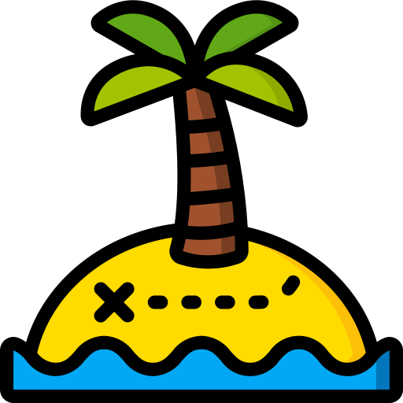
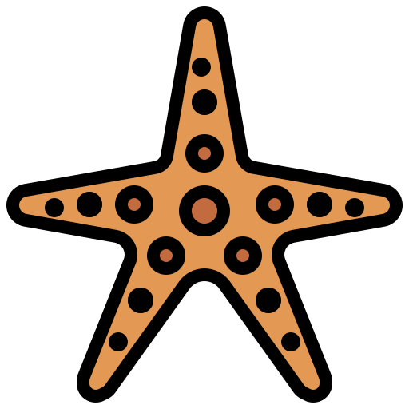
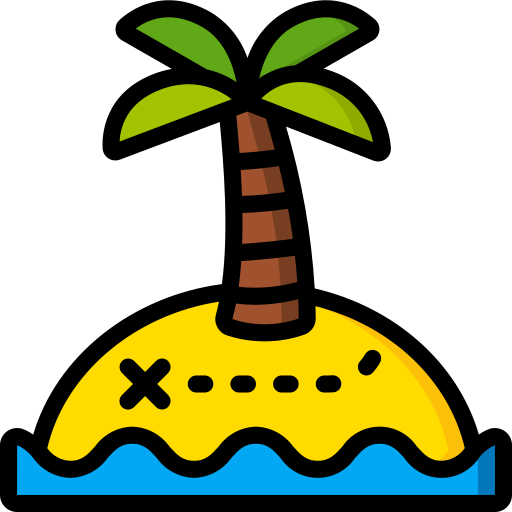
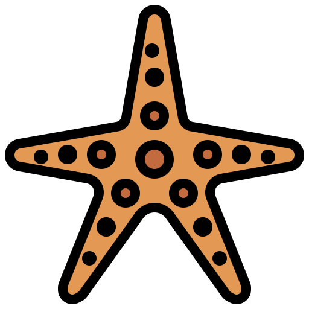
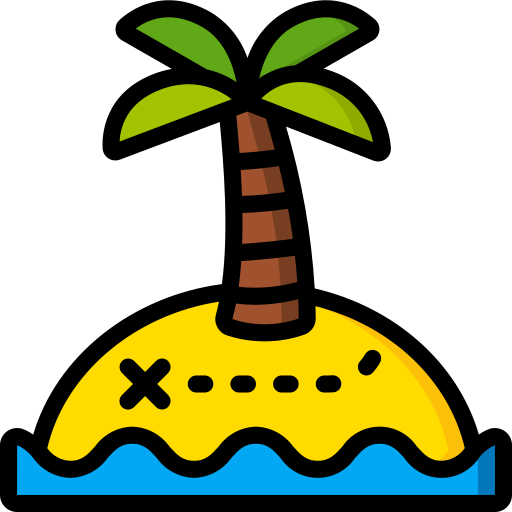
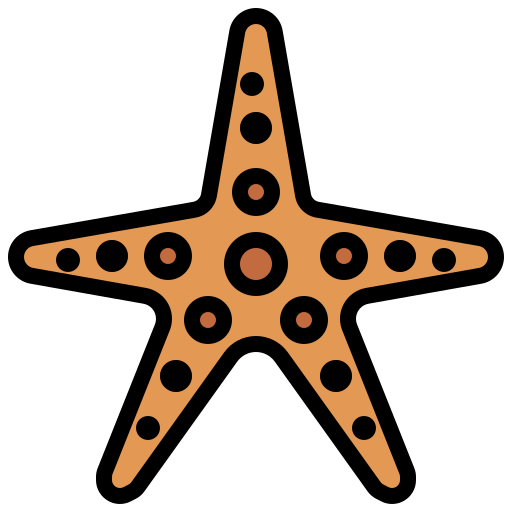
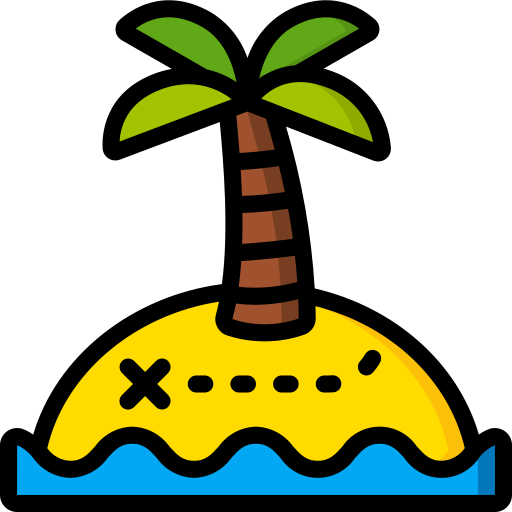
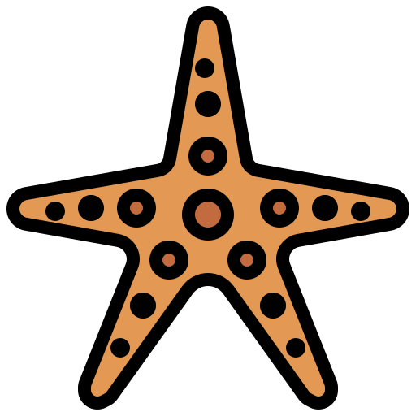

I am Feencode.
a Full-Stack Web Developer for freelancers and start-ups.
Web design & Web development, Digital marketing, SEO, Graphic design, Translations.
 







I am a Web Designer, Web Developer and Digital Markting specialist and I have also experience in Grahic Design, Copywriting, SEO, translations. I am the founder of Feencode and I can give you an all-round assistance as a freelancer or a start-up.
I studied International Business and Languages in the Netherlands and started my marketing career in Spain, working several years in different companies. This work experience made me an expert in Google AdWords, Facebook and Instagram campaigns and email marketing.
During my first internship in 2014, I started to maintain the WordPress website of the hosting company. This made me fel in love with coding and the creation of websites. I finished my Master of Science in Multimedia Applications in 2019 and I keep learning every day in order to offer the best know-how possible. I have became a Full-Stack Web Developer over time the combination of logic and creativity has made it my passion.
Since early childhood I loved to write an I have started writing my own novel and many short-stories when I was 14 years old. I have never published them, but I have recently started to rewrite this novel as a hobby. Furthermore, I have written articles and blog posts on a daily basis since 2016. SEO is something you can never completely understand and its laws change regulaly, but I keep myself up to date and implement the most essential SEO strategies in any website I create.
My natuve language is German, but I also speak English, Dutch and Spanish fluently. As I lived in Australia, the Netherlands and Spain for several years and keep speaking all those language almost daily, I can offer a great translation service for German, English, Dutch and Spanish. You want your website to be a multilanguage website? No problem! I can create your website and then translate it for you.
Graphic Design is a relatively new skill of mine, which I learnt by following several online courses an by simply doing. Graphic Design is a great way for me to use my creativity virtually. If you need a flyer, an ad, a logo, a book cover or something similiar, I would love to create it for you.
I am passionate about web development and I will offer you a great price. Your project will help me to enhance my portfolio and you will pay very little for a great website. It´s a win win!
CONTACT ME